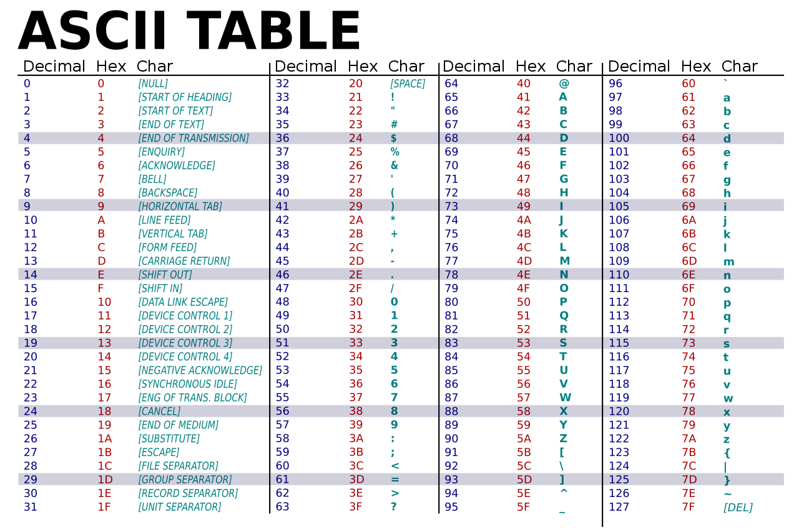

Data Types
Character
A data type that represents a letter of the alphabet.
Extra Knowledge:
Because a character cannot be directly represented by ones and zeros, computer scientists of the past created a system in order to store them using numbers, where each number represents a character. This system is called ASCII Code.
Integer
A data type that represents a whole number. In other words, a real number that does not have fractional values.
Double
A data type that represents a real number. Unlike the integer, it includes fractional values.
Boolean
A data type that can only contain 2 value: true and false.
Extra Knowledge
Because values can only be stored in numerical form, false is stored as 0 and true can be represented by any other number, but is usually stored as 1.
Array
A data type that represents other data in a structure. This structure looks like a bookshelf, where each shelf can only hold one value. Each shelf is numbered starting from 0. A value can be accessed by specifying what shelf it's on.
String
A data type that represent a phrase.
Extra Knowledge
Because strings are made up of multiple characters, a string isn’t stored as a single value, but rather an array of characters.
Object
A data type that holds other data types in an unstructured fashion. Because all values inside an object are initialized, they can be accessed by their associated key. In other words, the values inside can be accessed by using the name of the value they are in.
Java Specific
In JavaScript, value types are not initialized separately. All values can only be initialized with one of two value types: var and let. Both value types are very similar and are often used interchangeably.
Extra Knowledge
The difference between var and let is in their scopes. In other words, the range where they are visible.
In the case of let, it is only usable within the scope it is initialized in. For example, if it is initialized within a function, it can only be used inside that function. Similarly, if it is initialized inside a statement, it will cease to exist once the is statement is exited.
A var on the other hand will only be limited by either the class or function it is initialized in. What that means is that if it is made inside a statement, the value will still exist when that statement is exited.
Statements
if
An if statement allows for code to be run optionally. It does this by defining a condition, if that condition is met, the code will be run, if not, it will be skipped. In addition, the if statement also contained an else statement. What is does is run the code inside if the is statement is false. This way you can run two different blocks of code depending on your requirements.
As an extension to the general if and else statements, there is the possibility of adding more options using an ifelse statement. This allows you to add conditions in the else statement so that it’s not necessarily fun if the if statement is false.
for
A for loop allows code to be run a specific amount of times. More specifically, it’s a loop that increments a value every time it is run and one that value reaches the predefined threshold, the loop ends.
foreach
A for each loop is the same as a for loop but instead of having an incremental value, it loops directly through a list, giving the coder access to the list elements directly.
while
A while loop is a loop that will continue until the set condition is met. Because it doesn’t have implementation, the exit condition needs to be triggered from code inside the loop.
dowhile
A dowhile is a typical while loop, but instead of the exit condition being checked at the top of the loop, it’s checked at the bottom. What this means is that the loop will be run at least once before the exit condition is checked.
Functions
A function is a clock of code that can be run only when it is triggered. Functions are used to separate out code and make it look netter, as well as to avoid writing repetitive code. In other word, if there is a piece of code that needs to be run in multiple locations, instead of copying and pasting that piece of code everywhere, you make a function and just call that function wherever it is needed.
To create a function, you need to assign it a name as well as specify its parameters.
Parameters
A parameter is a value that is sent into a function when it is called. This allows for the code to manipulate different data depending on where it is called from. You can send any number of parameters into a function as long as the function is built to handle it.
Return
The return specifies what value is returned by a function. This is useful when you want a result from the function. You can only ever return one value from a function.
Passing Types
When dealing with values in relation to functions, it is important to understand the two passing types that exist. These types affect how the value is treated when inside a function.
Pass by value
When a variable is passed by value as a parameter, the function doesn’t actually receive that variable. What it receives is a copy of it. Because of this, any changes made to the parameter will not affect the original variable. In other words, a clone of the value is received by the function and nothing done to the clone affects the original.
Value types that are passed by value include: integer, double, boolean…
Pass by reference
When a variable is passed by reference as a parameter, what it actually contains isn’t the value it’self, but an address for where that value is located in memory. Because of this, when it is sent into a function as a parameter, a copy of the address is made. What this means is that any changes made to that parameter inside the function will affect the original data type outside it.
Value types that are passed by reference include: array, object…
Library Example
Let’s give a real world example of what this looks like.
Imaging that, every computer has its own library. When you create a variable, a book is added to the library, where the title is the variable name and the content is that value the variable contains.
Each function is a worked in the library, and their job is to use the books to accomplish a task. When they are called, they exit the waiting room and so to the librarian to get the books they need in order to accomplish their task.
For all the books that are passed by value, the librarian will make a clone of the original book and give it to the worker. For all the books that are passed by reference, the librarian will give the worker a paper with the location in the library where the book can be found.
The worker will then go get the past by reference books himself and sit at his desk.
While doing his task, the worked is allowed to change the content of the books he has.
Once done, he has to return all the books passed by reference to their proper spots in the library and burn the books that were passed by value. He will then go back to the librarian and give her a book where he wrote down the result of his task (the return), and then go back to the waiting room.
The librarian will then either add that book to the library or burn it, depending on whether the value needs to be saved.